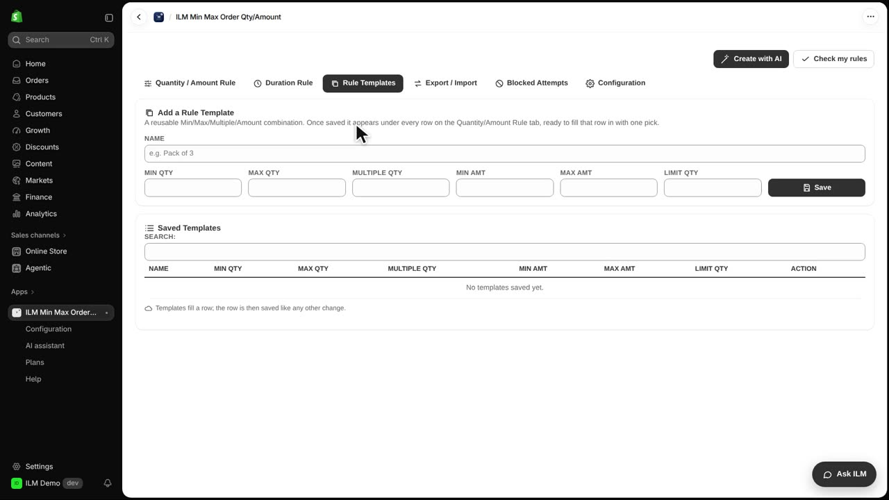
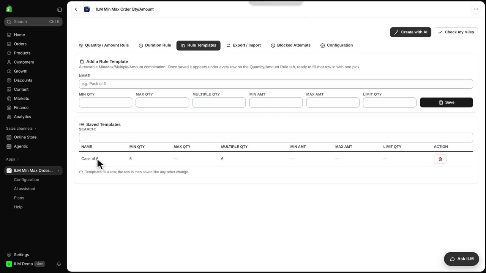
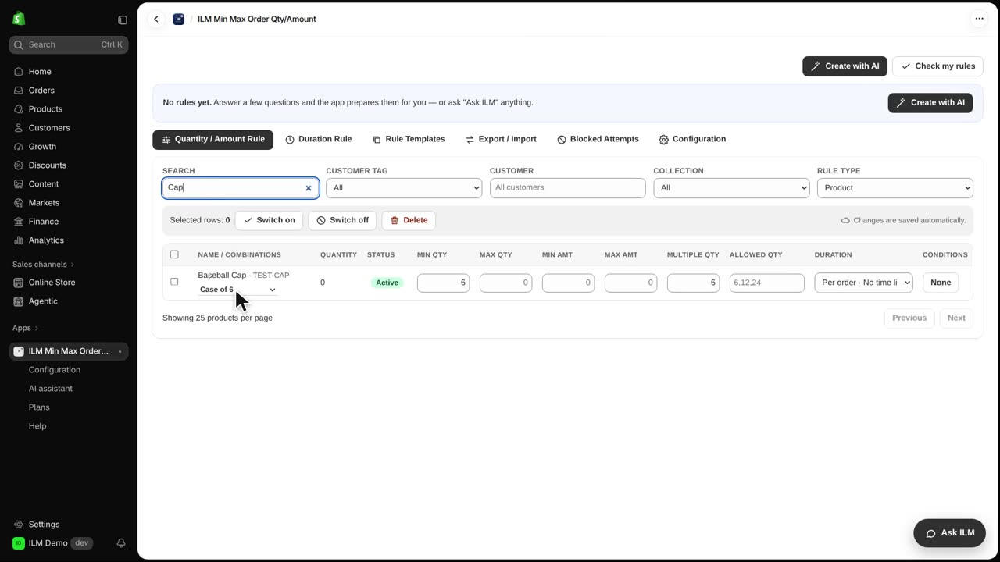
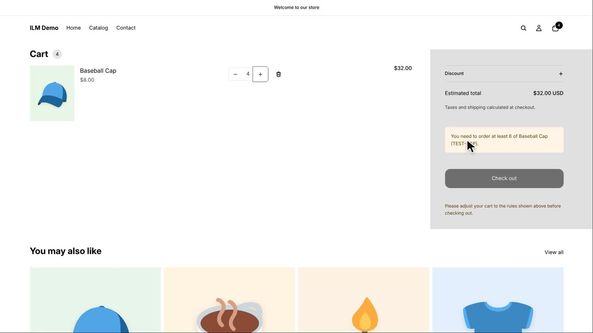

Rule templates let you save a combination of limits once, then apply it to any product row with a single pick. Today we will build a template called Case of 6, which enforces a minimum of six items and orders in steps of six, and apply it to the Baseball Cap. This is perfect for shops that sell some products only in cases or packs.
We start on the Rule Templates tab. This is where all your saved templates live, ready to be picked from any product row. Click the tab to open it.

Now we name the template Case of 6. In the Min Qty field we type six, and in the Multiple Qty field we also type six. Then we click Save. The new template appears in the list below, ready to use.

Back on the Quantity / Amount Rule tab, we search for Cap to find the Baseball Cap row. Every row now has a template picker. We open it and choose Case of 6. The row is filled in automatically with the saved limits.

The row now shows Min Qty six and Multiple Qty six for the Baseball Cap, and it is saved. This means shoppers must buy at least six caps, and the quantity must go up in steps of six.
In the storefront, we try to add four caps to the cart. The shop refuses it, because the Baseball Cap now comes in cases of six. The shopper sees a notice explaining the minimum and multiple requirement.
